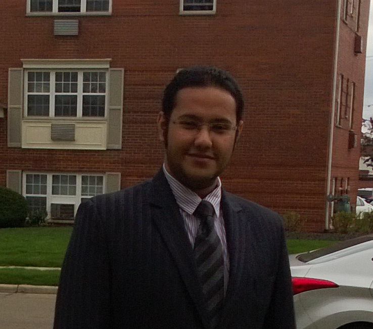

- Passed my PhD Candidacy Examination.
- Paper accepted at Pacific Graphics 2016.
- Interned in Walt Disney Animation Studios at Burbank CA.
I am from the beautiful city of Kolkata in India. Before coming to OSU, I finished my undergraduate studies in the Dept. of Computer Science and Engineering at Jadavpur University in Kolkata.
I have also spent a year at the beautiful city of Bengaluru where I was employed by Synopsys India Pvt. Ltd. as an R&D Engineer in the verification group.
I have travelled to quite a few places around the world. Travel truly broadens the mind and help us understand and appreciate the cultural diversity in this world. My principle travels have been around India(my native land). Europe, parts of Asia, the mystical Egypt and ofcourse USA. Of all the places I have visited, my top picks are New York(USA), Prague (Czech Republic), Alexandria(Egypt), Goa(India) and Hampi(India).
I also have a sporadically maintained blog.
Realistic Human Skin Rendering (CSE 5545)
For any realistic rendering of human skin, we must select a good BRDF (Bidirectional Reflectance Distribution Function) and an approximation to the phenomena of Subsurface Scattering. For this project, we followed the approach outlined in this NVIDIA tutorial. We approximated the subsurface scattering as a sum of gaussians and selected the Kelemen and Szirmay-Kalos analytic BRDF to get the results.
LISP Interpreter (CSE 6341)
A fully functional LISP interpreter written using C++ for a large subset of LISP commands as a part of Programming Languages class. I have used the Boost C++ library extensively for the Tokenization part. I have also implemented the parsing stage using a LL(1) parser that was written from scratch. The final result can parse LISP expressions of any level of complexity to produce correct results.

Geometry in 2D (Personal)
I was recently learning how to program in Javascript and I thought I will write an interactive Javascript based implementation of some of the stuff in Geometric Modelling class. Thanks to the HTML5 Canvas System, displaying 2D Visualization in browser is a cinch. Another motivation is that most of the current web based stuff are all applet based and we know thats a pain for some people who want to use something like Chrome in OSX.
- 2012-2013 : Graduate School Fellowship, OSU
- 2011 : UGC Undergraduate Research Scholarship, Jadavpur University
- 2010 : DAAD WISE Scholarship
Autumn 2014:
- Lab Instructor, CSE 2111 - Modelling and Problem Solving with Spreadsheets and Databases